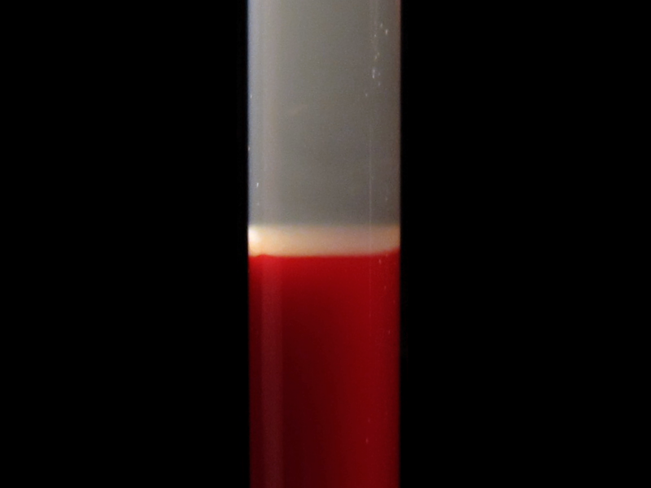
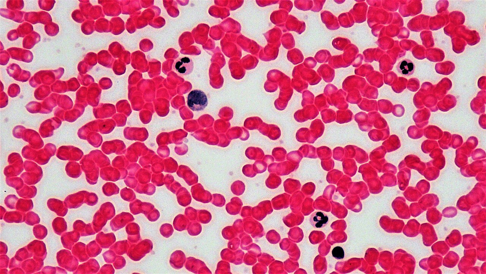
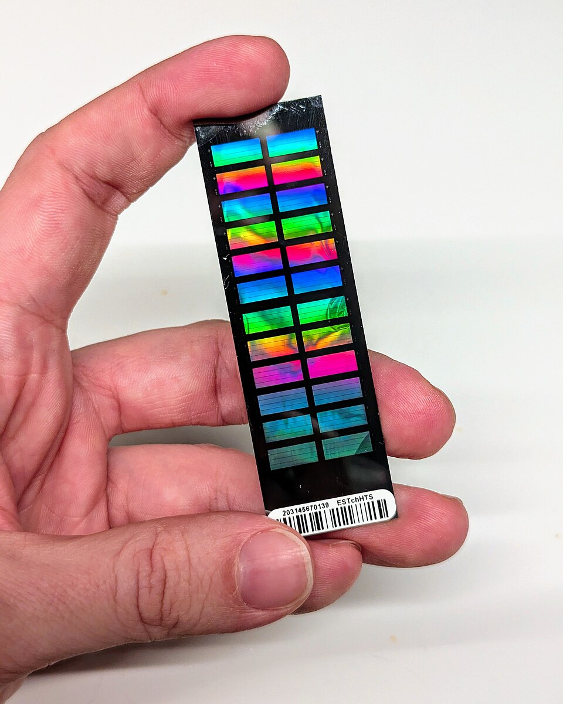
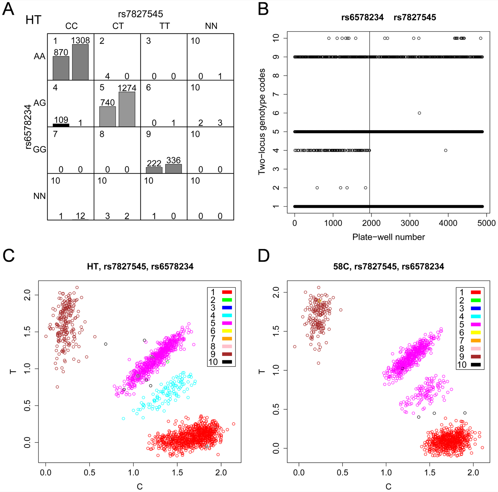
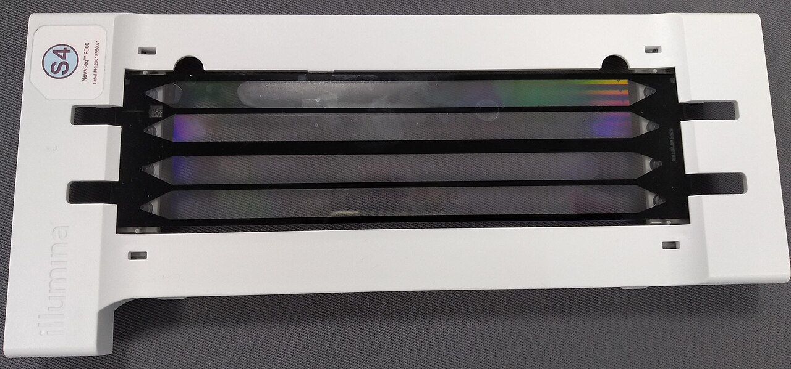

Part B · Measuring the system · Page 11 of 13
From a blood sample to genotypes
Every 0, 1 or 2 in a genotype matrix is the end of a chain of laboratory and statistical steps. DNA is extracted from white blood cells; a genotyping array or a sequencer turns it into light signals or short reads; software turns those into genotype calls; quality control removes failed samples and variants; and imputation predicts millions of variants that were never measured. This page follows the chain, so that you know what each number means, how it can be wrong, and which check catches each kind of error.
Three ways to read a genome
A genotype in your data is never observed directly. An array turns two colors of light at several hundred thousand chosen SNPs into calls; imputation turns those calls into probabilities at tens of millions of other variants; sequencing turns counts of reads into calls at almost every position. Each route has its own typical errors, and quality control is how we find them.
- DNA for genotyping comes from white blood cells; red blood cells have no nucleus (From blood to DNA).
- An array call is a cluster assignment of two light signals; points between clusters become no-calls, the missing entries of the matrix (Genotyping arrays).
- Quality control compares every row (person) and column (variant) with what biology predicts: few missing entries, Hardy–Weinberg proportions, the expected heterozygosity, a matching sex, known relatives (Quality control).
- Imputation copies segments of reference haplotypes; its output is a dosage P(1) + 2·P(2) between 0 and 2, with a quality score (Imputation).
- Sequencing counts reads: a heterozygote shows about half its reads with each allele, so calls need enough read depth (Sequencing).
The figure above shows one person and one stretch of a chromosome. In the genotype matrix this is part of one row: the array fills a few columns with whole numbers (and leaves an occasional missing entry), imputation fills many more columns with fractional dosages, and sequencing fills nearly every column, including rare variants that the other two routes miss. In UK Biobank all three routes exist for the same people: about 800,000 array markers, about 96 million imputed variants, exomes and whole genomes1,2,3.
From blood to DNA Core
Most genetic studies, UK Biobank included, get their DNA from a blood sample. Whole blood is blood as it leaves the vein: a liquid, the plasma, carrying red blood cells, white blood cells and platelets. Spinning a tube of blood fast in a centrifuge separates these by density into three layers (figure below)4:
- Plasma on top, the liquid part. If the blood is allowed to clot first, the liquid left over is serum: plasma without its clotting factors4.
- The buffy coat, a thin pale layer, normally less than 1% of the sample, which holds the white blood cells (leukocytes) and the platelets, small cell fragments that help blood clot4,5.
- Red blood cells (erythrocytes) at the bottom, about 45% of the sample; the share varies between people, from about 36% to 50%4.
Genotyping needs the DNA in the cell nucleus. Mature red blood cells have expelled their nucleus6, and platelets are pieces of a larger cell, without a nucleus5. White blood cells are the only complete cells in blood, each with a nucleus5, so the DNA comes from them, although a microliter of blood holds only 5,000 to 10,000 of them5. Each white blood cell carries the person's inherited (germline) genome, plus a few changes acquired during life; those acquired changes matter for mosaicism, below.
DNA extraction is the laboratory process that breaks the cells open, removes proteins and other cell material, and leaves purified DNA in a small volume of liquid.


Genotyping arrays: two colors of light per SNP Core
Genotyping means determining which alleles a person carries at chosen positions in the genome. A genotyping array (also called a SNP array or chip) is a glass surface carrying hundreds of thousands of different probes: short single-stranded DNA sequences, each written to match the genome next to one SNP. It works by hybridization: a single strand of DNA binds to a strand with the complementary sequence (A pairs with T, C with G; see base pairing).
How an array reads one SNP
UK Biobank used Affymetrix Axiom arrays1. In the Axiom assay, a person's DNA is first copied many times and cut into fragments of 25 to 125 base pairs, which hybridize to the probes on the array11. Each probe ends one base before the SNP. A short labeled probe from the surrounding solution is then joined (ligated) to the end of the array probe only if its first base pairs with the base at the SNP; its fluorescent label depends on that base, one dye for A or T and another for C or G11,47. Because A pairs with T and C with G, both alleles of an A/T or C/G SNP would give the same color, so such SNPs are read with separate probes at different places on the array47. After washing, a scanner measures the fluorescence intensity, the brightness of each dye's light, at every probe11. For a SNP whose alleles are A and G, dye 1 light therefore reports allele A and dye 2 light reports allele G (figure below, left). Other array designs, such as the Illumina chip in the photo, use a different chemistry but also give one signal for each of the two alleles12.
Array software names the two alleles of every SNP allele A and allele B. These are labels, not bases: in our example allele A happens to be the base A and allele B is the base G. The result for one person at one SNP is two numbers, the allele A and allele B intensities. A person with genotype AA gives mostly allele A light, BB mostly allele B light, and AB about half of each (figure, right).

From light to genotype calls
Genotype calling turns the two intensities into a genotype. It is done one SNP at a time using many people at once. A cluster plot, allele A intensity against allele B intensity with one point per person, shows three clusters, one per genotype; the calling software finds the clusters and gives each person the genotype of the cluster they belong to12. Because total brightness varies between samples, for example with the amount of DNA, many callers work with the share of the signal that comes from allele B, which places the three genotypes along three directions from the origin12. A point that is not close enough to any cluster gets a no-call, a missing genotype, rather than a guess12.
The call rate of a SNP is the fraction of people with a call; the call rate of a person is the fraction of SNPs called for them. Missingness is one minus the call rate. Both are the first numbers quality control looks at (below).
Because calling uses many samples together, it is done in groups. UK Biobank called genotypes in 106 batches of about 4,700 people, each made of several 96-well plates1. A batch effect is a systematic difference between batches that comes from the measurement process (reagents, instrument, date) rather than from biology. If the clusters of one batch shift, the caller can miscall a whole group of people at that SNP. Try it:
What to notice. At the default threshold almost everyone is called, the calls agree with the simulated truth, and the Hardy–Weinberg test is unremarkable. Raise the confidence needed to 0.95: the hatched no-call zones widen and the call rate falls. Heterozygotes sit between two clusters, so they become no-calls more often than homozygotes, and the genotypes that remain now have too few heterozygotes for Hardy–Weinberg proportions (exact p ≈ 0.002 for the first simulated sample): missingness that depends on the genotype biases what is left. Then switch on the batch effect with a low threshold (0.5): batch 2's heterozygotes slide toward the AA cluster and many are called AA, so the allele frequency differs between batches and the Hardy–Weinberg test fails; color the points by true genotype to see the mistakes. At high thresholds the same problem appears instead as many no-calls in batch 2. Per-batch call rates, Hardy–Weinberg tests and batch comparisons are exactly the QC checks that look for these patterns.

What an array measures, and what it misses
Array content is chosen in advance. The UK Biobank Axiom array has 825,927 markers; about 50,000 participants were genotyped on the closely related UK BiLEVE array (807,411 markers), and the two share over 95% of their content1,7. The markers were chosen to capture genome-wide variation (SNPs and short indels) well enough for imputation in European populations, at common (minor allele frequency above 5%) and low-frequency (1–5%) variants, plus variants with known or possible roles in disease and coding variants across a range of frequencies, including rare ones1. Most common variants are measured indirectly: through linkage disequilibrium (LD), a tag SNP on the array stands in for its correlated neighbors.
What arrays miss:
- Variants not on the array. A typical genome differs from the reference at 4.1 to 5.0 million sites14; an array measures fewer than a million chosen ones.
- Reliable calls for very rare variants. A rare variant has few or no heterozygotes in a batch, so its clusters are poorly defined. Compared with sequencing in UK Biobank, array calls of 108,574 common variants had sensitivity, specificity and predictive values above 99%, but for variants with a frequency below 0.001%, only 16% of 4,757 heterozygous array calls were confirmed15.
- Most structural variants, and phase. An array reports a genotype, not which allele sits on which chromosome copy (phasing, below).
The same intensities reveal copy number and mosaicism Optional
Array intensities carry more information than the genotype calls. Two summaries are computed for every SNP in every sample18:
- B allele frequency (BAF): the share of the signal that comes from allele B, scaled so that the three genotype clusters sit at 0 (AA), 0.5 (AB) and 1 (BB)18. Despite the name, it describes one sample at one SNP, not an allele frequency in a population.
- Log R ratio (LRR): the base-2 logarithm of the observed total intensity divided by the intensity expected for that genotype18. Around 0 means the usual two copies; below 0, fewer copies; above 0, more.
Plotted along a chromosome, they reveal changes in copy number (figure below). A deleted region has no heterozygotes and a lower LRR; a duplicated region splits the heterozygous band into two bands near 1/3 and 2/3 and has a higher LRR; and a region where one chromosome copy has been replaced by a copy of the other (copy-neutral loss of heterozygosity) loses its heterozygotes without any change in LRR18.
The last case is mosaicism: a change carried by only some of a person's cells. Blood cells come from stem cells that keep dividing for life, and a stem cell with an acquired change can give rise to a large share of the blood (clonal hematopoiesis). UK Biobank used the intensities of X- and Y-chromosome markers to infer genetic sex and to flag 652 participants (0.134%) whose sex chromosomes were putatively different from XX or XY (Field 22019)1. Loh et al. found 8,342 mosaic chromosomal alterations in 7,484 of 151,202 participants' blood-derived DNA, detecting some present in as few as 1% of cells by using the phase of each person's alleles19.
Quality control: checking rows and columns against biology Core
Quality control (QC) is the set of checks that removes or flags samples and variants whose genotypes are likely to be wrong. It matters because the genetic effects being sought are small, while an artifact that differs between cases and controls can create an association as strong as a real one, as in the fourth-cluster example above13. QC reads the genotype matrix in two directions (figure below): sample QC reads along the rows (people) and variant QC reads down the columns (variants). Each check compares the data with an expectation from biology covered on earlier pages.
Protocols differ in the order and in the thresholds. Anderson et al. run sample QC first, so that a few badly genotyped samples do not cause good SNPs to be removed, accepting that a few bad SNPs may then cause people to be removed20. Marees et al. use the opposite order for missingness, SNPs before people, first with a lenient threshold (over 20% missing) and then with a strict one (over 2%)21; the Session 1 practical (below) also filters SNPs first26. The thresholds in the tables are typical values from published protocols, not universal rules.
Sample QC: one row per person
| Check (PLINK 1.9) | Biological expectation | A deviation suggests | Typical threshold |
|---|---|---|---|
Call rate--missing, --mind | Good DNA gives a call at nearly every SNP. | Too little or degraded DNA. | Remove people missing more than 2–5% of SNPs: ≥ 3%20; 2% after a first pass at 20%21; 5% in Reed et al.'s PennCATH tutorial22. |
Heterozygosity--het | A person's share of heterozygous SNPs is close to that expected from the allele frequencies (heterozygosity). PLINK summarizes it as the inbreeding coefficient F = 1 − observed ÷ expected number of heterozygous SNPs: near 0 as expected, positive with too few heterozygotes, negative with too many23. | Too high: DNA from two people mixed (contamination). Too low: related parents (consanguinity) or poor DNA. | Remove people more than 3 standard deviations from the mean20,21; |F| > 0.10 in Reed et al.'s tutorial22. |
Sex check--check-sex | Males have one X chromosome, so outside the pseudoautosomal regions they have no heterozygous X SNPs (X-chromosome F near 1); females have two X chromosomes (F near 0). | A sample swap or labeling error, or a sex-chromosome aneuploidy such as XXY. | PLINK calls F > 0.8 male and F < 0.2 female by default23; mismatches with the recorded sex are removed or checked. |
Duplicates and relatives--genome | Unrelated people share almost none of their genome identical by descent (IBD); first-degree relatives share about half; duplicate samples (and identical twins) share all of it. | A sample genotyped twice, or relatives the study did not know about. | PI_HAT = P(IBD = 2) + ½ P(IBD = 1)24 above 0.1875, halfway between second- and third-degree relatives: remove one of each pair20; 0.2 in Marees et al.21; above 0.98: duplicates20. Compute on LD-pruned SNPs24. |
Genetic ancestry--pca with 1000 Genomes; GrafAnc | People with similar genetic ancestry cluster together in a principal component analysis (PCA). | Participants who are genetically less similar to the rest of the sample; ancestry differences can confound associations (stratification). | No universal threshold: analyze groups of similar genetic ancestry separately, or adjust for principal components20,21. |
Mendelian errors (families only)--mendel | A child has one allele from each parent (Mendel's laws). | A genotyping error, a sample swap or misattributed parentage. | PLINK reports errors per family, per person and per variant23; families or variants with many errors are investigated. |
In UK Biobank, 968 samples with unusually high heterozygosity (after adjusting for ancestry) or more than 5% missing calls are flagged in Field 22027; 378 participants had a genetic sex different from their self-reported sex; and 835 samples were excluded before release: duplicate samples, about 10 samples probably mishandled in the laboratory, and participants who had withdrawn1. Relatives are common: 30.3% of genotyped participants have a relative of third degree or closer in the cohort1, so analyses either use an unrelated subset or a method that models relatedness (relatives in genotype data).
Variant QC: one column per variant
| Check (PLINK 1.9) | Biological expectation | A deviation suggests | Typical threshold |
|---|---|---|---|
Variant call rate--missing, --geno | A good probe gives a call for almost everyone. | Clusters that are poorly separated. | Remove SNPs missing in more than 2–5% of people20,21,22. |
Differential missingness (case–control data)--test-missing | Whether a call fails should not depend on disease status. | Cases and controls processed differently (batches, laboratories, DNA source): a source of false associations. | Fisher's exact test of missingness in cases versus controls25; remove SNPs with P < 10⁻⁵20. |
Hardy–Weinberg equilibrium--hardy, --hwe | Genotype counts close to p², 2pq, q² (testing HWE). | A calling error, such as heterozygotes called as homozygotes. Test in controls, because a true association can distort HWE in cases. | P < 10⁻⁶ in controls and P < 10⁻¹⁰ in cases21; P < 10⁻⁵ in controls20; 10⁻⁶ in controls in Reed et al.'s tutorial22. |
Minor allele frequency--freq, --maf | A rare variant has few heterozygotes, so its clusters are poorly defined and tests on it have little power. | Unreliable calls (for very rare variants). | MAF below 1% in large samples (about 100,000 people) or 5% in moderate ones (about 10,000)21; 1–2% is typical20. |
| Batch and plate effects (allele frequency and call rate compared between batches) | In a well-randomized study, a variant has the same frequency in every batch. | A calling problem in one batch (the widget above). | UK Biobank tested every marker for batch, plate, sex and array effects, Hardy–Weinberg equilibrium and discordance between control replicates, and set calls to missing within a batch when P < 10⁻¹²1. |
UK Biobank's per-batch threshold of 10⁻¹² is far stricter than 10⁻⁶ because in very large samples even tiny, harmless departures from expectation become statistically significant (testing HWE).
Phasing and genotype imputation Core
Phasing: from genotypes to haplotypes
Arrays measure genotypes, not haplotypes: for a person who is heterozygous at two SNPs, the data do not say which alleles sit together on the same chromosome copy. Phasing infers this. With many thousands of people, statistical phasing finds, for each person, the pair of haplotypes that best explains their genotypes given the haplotypes seen across the sample. UK Biobank phased 670,739 autosomal markers in 487,442 people with the program SHAPEIT31.
Imputation: copying from reference haplotypes
Genotype imputation predicts genotypes at variants that were not measured. It needs a reference panel: haplotypes from many people sequenced at (nearly) every variant. Widely used panels:
- 1000 Genomes Project phase 3: 2,504 people from 26 populations14.
- Haplotype Reference Consortium (HRC): 64,976 haplotypes (32,488 people) from 20 studies, mostly of people labeled European ancestry, with about 39 million SNPs28,29.
- UK10K (a UK sequencing project) combined with 1000 Genomes: used by UK Biobank for variants not in the HRC1.
- TOPMed: 97,256 deeply sequenced genomes from diverse ancestries, with 308,107,085 variants in the published panel29; the TOPMed Imputation Server's current panel (r3) has 133,597 samples30.
Each phased haplotype of a study participant, known only at the array SNPs, is compared with the reference haplotypes. Where it matches a reference haplotype at the array SNPs, the alleles of that reference haplotype at the unmeasured variants are the likely ones. Because recombination has reshuffled segments over many generations, a participant's haplotype usually matches different reference haplotypes in different places, so imputation software models it as a mosaic of reference segments and reports probabilities, not certainties (figure below). The haplotypes and LD page shows why this works: it relies on linkage disequilibrium.
Genotype probabilities and dosages
For each person and imputed variant, the software outputs three genotype probabilities, P(0), P(1) and P(2), the probabilities that the person carries 0, 1 or 2 copies of the allele; they sum to 1. They are usually summarized as a dosage, the expected number of copies:
dosage = 0 × P(0) + 1 × P(1) + 2 × P(2) = P(1) + 2 P(2), a number between 0 and 2.
Association tests can use the dosage in a regression in place of a 0/1/2 count. A hard call (best-guess genotype) instead keeps only the most probable genotype, which discards the uncertainty.
| person | P(0) | P(1) | P(2) | dosage | hard call |
|---|---|---|---|---|---|
| 1 | 0.98 | 0.02 | 0.00 | 0.02 | 0 |
| 2 | 0.02 | 0.90 | 0.08 | 1.06 | 1 |
| 3 | 0.30 | 0.55 | 0.15 | 0.85 | 1 |
| 4 | 0.00 | 0.03 | 0.97 | 1.97 | 2 |
Person 3 shows why dosages are useful: the hard call is 1, but there is a 30% chance that the true genotype is 0 and a 15% chance that it is 2. The dosage of 0.85 keeps that uncertainty. In the site's matrix figures, imputed entries are drawn with a dashed orange outline.
How good is an imputed genotype?
Each imputed variant gets an imputation quality score between 0 and 1: the INFO score of the IMPUTE programs (used for UK Biobank's main imputation) or the estimated R² of minimac (used by the Michigan and TOPMed imputation servers)31,32. Both play the role of the squared correlation between the imputed dosages and the true genotypes31,32: 1 means the dosages are as informative as measured genotypes; values near 0 mean they carry almost no information. The squared correlation has a direct cost in sample size: to keep the same power for an association test, a variant measured with squared correlation r² needs about 1/r² times as many people33, so an r² of 0.8 needs 25% more. There is no universal cutoff; 0.3 and 0.5 are common choices31. In Bycroft et al.'s analysis, keeping variants with INFO > 0.3 and MAF > 0.1% left 16,443,622 autosomal variants of UK Biobank's 96 million1.
Imputation quality depends on:
- Allele frequency. Rare variants are harder: with an array of about 1 million SNPs, the HRC panel gave R² = 0.64 at MAF = 0.1%, against 0.36 with 1000 Genomes28.
- Panel size. Accuracy increases with the number of reference haplotypes32.
- Ancestry match. A variant can only be imputed if it is in the panel, and haplotypes are matched best by people of similar ancestry. With the diverse TOPMed panel, the average imputation r² for variants of frequency 0.1% in genomes labeled African ancestry rose from about 0.17 with previous panels to 0.9629.
Sequencing: reading the bases Core
Short-read sequencing
DNA sequencing determines the order of bases directly. UK Biobank's exomes and genomes, like those of nearly all large cohorts, were produced by short-read sequencing on Illumina instruments2,3, which works in three steps37:
- The DNA is cut into fragments, typically a few hundred base pairs long (about 200 in Lesk's description)38.
- The fragments are attached to a flow cell, a glass slide with channels, and each fragment is copied into a cluster of identical molecules37.
- In each cycle, labeled bases are added one at a time to a new strand complementary to each fragment, and the flow cell is imaged to see which base every cluster added (“sequencing by synthesis”)37.
Each fragment yields a read: the sequence of its first bases, from 50 to 300 bases long depending on the instrument and settings37,39. A paired-end read reads both ends of each fragment37; UK Biobank's exomes used 75 + 75 bases3 and its genomes 151 + 151 bases2,40. Illumina reads are accurate, above 99.5% per base, and their errors are mostly substitutions of one base for another37.
Read alignment (mapping) then finds where in the reference genome each read pair comes from; UK Biobank's genomes were aligned to GRCh3840. Reads from repeated sequences can match several places and are hard to place39. The read depth (coverage) at a position is the number of aligned reads covering it; averaged over the genome, it is the total number of bases sequenced divided by the genome length38. UK Biobank's genomes average 32.5× (at least 23.5× in every person)2.

From reads to genotype calls
Variant calling decides, at each position, whether a person carries a variant and which genotype. At a heterozygous SNP each read comes from one of the two chromosome copies with probability ½, so about half the reads show each allele; at a homozygous site nearly all reads agree, apart from errors. With few reads, chance can hide a heterozygote: with 4 reads, the probability that all of them come from the same copy is 2 × (½)⁴ = 1/8. Real variant callers use the quality score of each base and model errors, and large studies call many people together; UK Biobank called its genomes jointly across all participants with GraphTyper and separately, person by person, with DRAGEN2.
What to notice. With the default rule (call A/G when 20–80% of reads show G), a true heterozygote is called correctly about 98% of the time at 10×, and the rule first passes 99% at 15×. The curve is not smooth: read counts are whole numbers, and at depths that are multiples of 5 the band's edges (20% and 80% of the reads) fall exactly on a possible count, which the rule calls heterozygous, so accuracy dips just after 5×, 10×, 15× and so on. Narrowing the band to 30–70% sounds stricter but hurts heterozygotes: more of them fall outside it by chance, and 99% needs 39×. Widening it to 10–90% helps heterozygotes (8× suffices) but harms homozygotes: switch the true genotype to A/A, and at 10× about 3% of homozygous sites are called heterozygous because of a single misread base. A minimum depth turns low-depth calls into no-calls, the same trade between wrong calls and missing calls as the confidence threshold in the array widget. At UK Biobank's average of 32.5× (dotted line) this simple rule is right more than 99.9% of the time.
Exome versus genome sequencing
The exome is the set of all exons, the parts of genes that remain in the mature RNA (genes and gene expression). Its protein-coding part is only about 1% of the genome41. Whole-exome sequencing (WES) first captures the DNA fragments that overlap exons, using probes designed for those regions, and sequences only them37. Whole-genome sequencing (WGS) sequences all fragments. Exome sequencing therefore gives deep coverage of the exons and almost none elsewhere, while genome sequencing gives roughly even coverage everywhere (figure below).
Long-read sequencing
Long-read sequencing reads single DNA molecules thousands of bases long. PacBio HiFi reads are longer than 10,000 bases and more than 99% accurate; Oxford Nanopore reads are typically 10,000–100,000 bases, some over a million, with lower accuracy per read (87–98% on average)39. Long reads cross repeated sequences, detect structural variants that short reads miss (short reads are too short to detect more than 70% of human structural variation), and show phase directly, because a single read covers several heterozygous sites39.
Why whole cohorts can now be sequenced
NHGRI's estimate of the production cost of sequencing a human-sized genome fell from about $95 million in 2001 to about $525 in 2022 (figure below)44. The fall accelerated in January 2008, when sequencing centers switched from the older Sanger method to second-generation (short-read) instruments44. That fall is what made it possible to sequence the genomes of half a million UK Biobank participants between 2018 and 202145.
Comparing arrays, imputation, exomes and genomes Core
| Array | Imputed array | Exome (WES) | Genome (WGS) | |
|---|---|---|---|---|
| What is observed | Two intensities at each pre-chosen SNP | Nothing new: predictions from array haplotypes and a reference panel | Reads over the exons of protein-coding genes | Reads across almost the whole genome |
| Matrix entries | 0, 1, 2; missing = no-call | Dosages from 0 to 2, plus INFO or R² per variant | 0, 1, 2 from read counts, with depth and quality | 0, 1, 2 from read counts, with depth and quality |
| Variants | 805,4261 | About 96 million1 | 12.3 million, in coding regions3 | About 1.5 billion2 |
| People | 488,3771 | 487,4421 | 454,787 (2021 paper)3; over 470,000 released42 | 490,6402 |
| Best for | Common variants; QC; copy number from intensities | Common and low-frequency variants in GWAS | Rare coding variants (Session 7) | Rare variants everywhere, non-coding regions, structural variants |
| Typical errors | Cluster and batch problems; unreliable very rare variants15 | Low quality for rare variants and poorly matched ancestry29 | Uneven capture; misses variants outside targets40 | Low depth or hard-to-map repeats39 |
| Build and files | GRCh37; PLINK .bed/.bim/.fam17 | GRCh37 (HRC/UK10K) or GRCh38 (TOPMed); BGEN34,36 | GRCh383; VCF, PLINK and BGEN versions43 | GRCh3840; CRAM (aligned reads) and VCF files46 |
When you combine them, check the genome build: array and HRC-imputed positions are on GRCh37, sequencing and TOPMed-imputed positions on GRCh38 (reference genomes).
Check your understanding
Why is DNA extracted from the buffy coat and not from the red cell layer, which holds far more cells?
Mature red blood cells have no nucleus, so they carry no nuclear DNA. The buffy coat holds the white blood cells, the only complete cells in blood, each with a nucleus and the person's genome.
At one SNP, the heterozygote cluster of one genotyping batch has drifted toward the AA cluster. What could QC see?
Depending on the caller's threshold: heterozygotes in that batch called AA (too few heterozygotes, so the Hardy–Weinberg test fails, and the allele frequency differs between batches), or many no-calls in that batch (low call rate). If cases and controls were genotyped in different batches, the SNP would also show differential missingness or a false association.
A sample's heterozygosity is 5 standard deviations above the mean. What is the most likely explanation, and what do you do?
DNA from two people mixed in one sample (contamination): wherever the two people differ, the mixture looks heterozygous. Remove the sample. (Check first that the person is not simply from an ancestry group with higher heterozygosity than the rest of the sample.)
An imputed genotype has P(0) = 0.10, P(1) = 0.60, P(2) = 0.30. What are the dosage and the hard call?
Dosage = 0.60 + 2 × 0.30 = 1.20. The hard call is 1, the most probable genotype; it discards the 40% chance that the genotype is 0 or 2.
A heterozygote is sequenced at 6× depth. What is the probability that all 6 reads come from the same chromosome copy, so that it looks homozygous?
Each read comes from either copy with probability ½, so the probability that all 6 come from the same copy is 2 × (½)⁶ = 1/32 ≈ 3.1%, ignoring sequencing errors.
A variant with frequency 0.05% causes a rare disease. Where in UK Biobank's data would you look for it, and why?
In the sequencing data (exomes if it is in a coding exon, otherwise genomes). It is probably not on the array, array calls of very rare variants are unreliable, and imputation quality is low at such frequencies, while sequencing reads it directly in every person.
Learn more
- DNA Microarray Technology Fact Sheet · genome.gov (NHGRI) intro — what a microarray is and how hybridization is read out.
- Overview of Illumina Sequencing by Synthesis Workflow · Illumina, YouTube (5 min) intro — animation of library preparation, clusters on a flow cell and sequencing by synthesis.
- Sequencing Coverage for NGS Experiments · illumina.com intro — what “30× coverage” means, with the Lander–Waterman calculation.
- LaFramboise 2009, “Single nucleotide polymorphism arrays: a decade of biological, computational and technological advances” · Nucleic Acids Research intermediate — how arrays measure alleles, how calling algorithms cluster intensities, and copy-number analysis.
- Anderson et al. 2010, “Data quality control in genetic case-control association studies” · Nature Protocols intermediate — the classic step-by-step protocol for sample and SNP QC with PLINK.
- Marees et al. 2018, “A tutorial on conducting genome-wide association studies: Quality control and statistical analysis” · Int J Methods Psychiatr Res intermediate — hands-on PLINK tutorial with example scripts.
- Goodwin, McPherson & McCombie 2016, “Coming of age: ten years of next-generation sequencing technologies” · Nature Reviews Genetics intermediate — short- and long-read platforms and their error profiles.
- Das et al. 2016, “Next-generation genotype imputation service and methods” · Nature Genetics advanced — how reference-panel imputation works at scale (the Michigan Imputation Server).
- Bycroft et al. 2018, “The UK Biobank resource with deep phenotyping and genomic data” · Nature advanced — UK Biobank's arrays, QC, phasing, imputation, relatedness and ancestry.
- Genotyping of 500,000 UK Biobank participants: description of sample processing workflow and preparation of DNA for genotyping · UK Biobank (PDF, version 2.0, 2017) advanced — from buffy coat to DNA plates.
Sources for this page
- Bycroft C, Freeman C, Petkova D, et al. The UK Biobank resource with deep phenotyping and genomic data. Nature 2018;562:203–209. doi:10.1038/s41586-018-0579-z
- UK Biobank Whole-Genome Sequencing Consortium. Whole-genome sequencing of 490,640 UK Biobank participants. Nature 2025;645:692–701. doi:10.1038/s41586-025-09272-9
- Backman JD, Li AH, Marcketta A, et al. Exome sequencing and analysis of 454,787 UK Biobank participants. Nature 2021;599:628–634. doi:10.1038/s41586-021-04103-z
- Betts JG, Young KA, Wise JA, et al. Anatomy and Physiology 2e, section 18.1, An overview of blood. OpenStax; 2022. openstax.org
- Betts JG, Young KA, Wise JA, et al. Anatomy and Physiology 2e, section 18.4, Leukocytes and platelets. OpenStax; 2022. openstax.org
- Moras M, Lefevre SD, Ostuni MA. From erythroblasts to mature red blood cells: organelle clearance in mammals. Front Physiol 2017;8:1076. doi:10.3389/fphys.2017.01076
- UK Biobank. DNA processing document (ukb_dna_processing.pdf), version 2.0, 11 July 2017. biobank.ndph.ox.ac.uk
- UK Biobank. Blood sample collection procedure (Bloodsample.pdf), version 1.0, 15 April 2011. biobank.ndph.ox.ac.uk
- Elliott P, Peakman TC; UK Biobank. The UK Biobank sample handling and storage protocol for the collection, processing and archiving of human blood and urine. Int J Epidemiol 2008;37:234–244. doi:10.1093/ije/dym276
- UK Biobank Data Showcase, Category 263, Genotypes. biobank.ndph.ox.ac.uk
- Affymetrix. Axiom Genome-Wide CEU 1 Array Plate, data sheet P/N DNA00449 Rev. 1 (assay chemistry of the Axiom 2.0 assay). thermofisher.com
- LaFramboise T. Single nucleotide polymorphism arrays: a decade of biological, computational and technological advances. Nucleic Acids Res 2009;37:4181–4193. doi:10.1093/nar/gkp552
- Liu Y, Xu H, Chen S, et al. Genome-wide interaction-based association analysis identified multiple new susceptibility loci for common diseases. PLoS Genet 2011;7:e1001338. doi:10.1371/journal.pgen.1001338
- The 1000 Genomes Project Consortium (Auton A, et al.). A global reference for human genetic variation. Nature 2015;526:68–74. doi:10.1038/nature15393
- Weedon MN, Jackson L, Harrison JW, et al. Use of SNP chips to detect rare pathogenic variants: retrospective, population based diagnostic evaluation. BMJ 2021;372:n214. doi:10.1136/bmj.n214
- UK Biobank Data Showcase, Field 22000, Genotype measurement batch. biobank.ndph.ox.ac.uk
- UK Biobank Data Showcase, Field 22418 (array genotype calls, PLINK format). biobank.ndph.ox.ac.uk
- Peiffer DA, Le JM, Steemers FJ, et al. High-resolution genomic profiling of chromosomal aberrations using Infinium whole-genome genotyping. Genome Res 2006;16:1136–1148. doi:10.1101/gr.5402306
- Loh P-R, Genovese G, Handsaker RE, et al. Insights into clonal haematopoiesis from 8,342 mosaic chromosomal alterations. Nature 2018;559:350–355. doi:10.1038/s41586-018-0321-x
- Anderson CA, Pettersson FH, Clarke GM, et al. Data quality control in genetic case-control association studies. Nat Protoc 2010;5:1564–1573. doi:10.1038/nprot.2010.116
- Marees AT, de Kluiver H, Stringer S, et al. A tutorial on conducting genome-wide association studies: quality control and statistical analysis. Int J Methods Psychiatr Res 2018;27:e1608. doi:10.1002/mpr.1608
- Reed E, Nunez S, Kulp D, et al. A guide to genome-wide association analysis and post-analytic interrogation. Stat Med 2015;34:3769–3792. doi:10.1002/sim.6605
- PLINK 1.9 documentation: Basic statistics (
--missing,--check-sex,--het,--mendel). cog-genomics.org - PLINK 1.9 documentation: Identity by descent (
--genome, PI_HAT). cog-genomics.org - PLINK 1.9 documentation: File format reference (
.imiss,.lmiss,.sexcheck,.genome,.missing). cog-genomics.org - DCEG Statistical Genetics Workshop. Session 1 practical: QC with PLINK on the PennCATH data (accessed 21 October 2026). dceg-workshops.github.io
- UK Biobank Data Showcase, Field 22006, Genetic ethnic grouping. biobank.ndph.ox.ac.uk
- McCarthy S, Das S, Kretzschmar W, et al. A reference panel of 64,976 haplotypes for genotype imputation. Nat Genet 2016;48:1279–1283. doi:10.1038/ng.3643
- Taliun D, Harris DN, Kessler MD, et al. Sequencing of 53,831 diverse genomes from the NHLBI TOPMed Program. Nature 2021;590:290–299. doi:10.1038/s41586-021-03205-y
- TOPMed Imputation Server documentation: Reference panels (TOPMed version R3 on GRCh38; accessed 21 October 2026). topmedimpute.readthedocs.io
- Howie B, Marchini J. IMPUTE2 documentation: output files and the info metric. mathgen.stats.ox.ac.uk
- Das S, Forer L, Schönherr S, et al. Next-generation genotype imputation service and methods. Nat Genet 2016;48:1284–1287. doi:10.1038/ng.3656
- Pritchard JK, Przeworski M. Linkage disequilibrium in humans: models and data. Am J Hum Genet 2001;69:1–14. doi:10.1086/321275
- UK Biobank Data Showcase, Field 22828 (imputed genotypes, WTCHG release, BGEN format). biobank.ndph.ox.ac.uk
- UK Biobank Data Showcase, Resource 1967, Imputation minor allele frequency and information scores (ukb_imp_mfi.tgz). biobank.ndph.ox.ac.uk
- UK Biobank Data Showcase, Fields 21007 (TOPMed imputation) and 21008 (Genomics England imputation). biobank.ndph.ox.ac.uk
- Goodwin S, McPherson JD, McCombie WR. Coming of age: ten years of next-generation sequencing technologies. Nat Rev Genet 2016;17:333–351. doi:10.1038/nrg.2016.49
- Lesk AM. Introduction to Genomics, 3rd ed. Oxford University Press; 2017. Chapter 1 (sequencing and Figure 1.14).
- Logsdon GA, Vollger MR, Eichler EE. Long-read human genome sequencing and its applications. Nat Rev Genet 2020;21:597–614. doi:10.1038/s41576-020-0236-x
- Halldorsson BV, Eggertsson HP, Moore KHS, et al. The sequences of 150,119 genomes in the UK Biobank. Nature 2022;607:732–740. doi:10.1038/s41586-022-04965-x
- GENCODE release 50 (GRCh38.p14). Protein-coding sequence of the MANE Select transcripts: 33.4 Mb, 1.08% of the 3.10 Gb assembly (computed for this lecture from gencode.v50.annotation.gtf.gz). gencodegenes.org
- UK Biobank. Final data release from the world's largest whole exome sequencing project (news item, 26 July 2022). ukbiobank.ac.uk
- UK Biobank Data Showcase, Category 170, Exome sequences. biobank.ndph.ox.ac.uk
- National Human Genome Research Institute. DNA Sequencing Costs: Data (page last updated 16 May 2023; data table of May 2022). genome.gov
- UK Biobank Data Showcase, Category 180, Whole genome sequences. biobank.ndph.ox.ac.uk
- UK Biobank Data Showcase, Category 185, DRAGEN WGS. biobank.ndph.ox.ac.uk
- Hoffmann TJ, Kvale MN, Hesselson SE, et al. Next generation genome-wide association tool: design and coverage of a high-throughput European-optimized SNP array. Genomics 2011;98:79–89. doi:10.1016/j.ygeno.2011.04.005